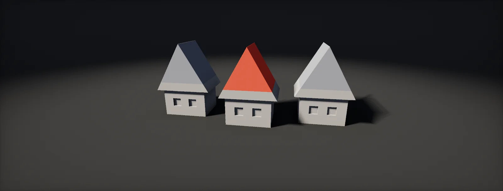

FBX, Prefabs, Variants and Nested Prefabs
What importing an FBX creates and which import settings matter, how prefabs store overrides, nested prefabs and prefab variants, where to make a change, how to wrap models, and why re-exporting a model can break the prefabs built on it.

What importing an FBX creates
An FBX file is not used directly. Unity's Model Importer reads it and produces a set of assets inside it: the meshes, a hierarchy of GameObjects, materials (unless you supply your own), animation clips and, for characters, an avatar. Its importer has four tabs, Model, Rig, Animation and Materials, and every setting is stored in the FBX's .meta file (.meta files).
The hierarchy appears as a : you can drag it into a scene like any prefab, but you cannot add components to it or change it in Prefab Mode, because it is regenerated from the file on every import. Everything you add has to live somewhere else, which is what most of this unit is about.
The first thing to get right is scale. Unity works in metres; FBX files store their own unit, often centimetres:
Convert Units applies the file's unit, and Scale Factor multiplies on top. Export at real size in metres, or in centimetres with Convert Units on, and leave Scale Factor at 1; a model that needs a scale factor of 100 or 0.01 has a unit mismatch that will resurface in every tool that reads the file.
Import settings that matter
- Bake Axis Conversion (Model tab): DCC tools that use Z-up or a different handedness produce a root rotated by −90° on X. This option bakes the conversion into the mesh, so the root rotation stays clean.
- Read/Write: keeps a CPU copy of every mesh, doubling its memory. Leave it off unless a script reads or modifies vertices at runtime.
- Mesh Compression and Optimize Mesh: compression saves disk space with some precision loss; optimisation reorders vertices and indices for the GPU and should stay on.
- Normals and Tangents: Import keeps the artist's normals (needed for baked normal maps to match); Calculate recomputes them with a smoothing angle.
- Generate Lightmap UVs: only for static meshes that receive baked light and have no clean second UV set (lightmaps).
- Materials: Material Creation Mode decides whether Unity creates materials at all; On Demand Remap maps each material slot of the FBX to a project material by name. Remapping is the clean route: the FBX keeps pointing at shared, hand-made materials.
Set these once with a Preset or an AssetPostprocessor instead of by hand per file; the implementation chapter has one.
Prefabs and overrides
A is a saved GameObject hierarchy with its components and values, stored as an asset. Placing it in a scene creates a prefab instance: it stays linked to the asset, so changing the asset in Prefab Mode changes every instance.
An instance can differ from its asset. Every difference is an : a changed property (shown in bold with a blue bar in the Inspector), an added or removed component, or an added child. The Overrides dropdown at the top of the Inspector lists them, and lets you Apply them to the asset or Revert them to the asset's values.
In the scene file, an instance is stored as a list of modifications against its source, each one a target object (by fileID and GUID), a property path and a value:
--- !u!1001 &1520748392
PrefabInstance:
m_Modification:
m_TransformParent: {fileID: 0}
m_Modifications:
- target: {fileID: 3348129571231092, guid: 8f2c41d7e0a94b3c8d6e5f7a1b2c3d4e, type: 3}
propertyPath: m_LocalPosition.x
value: 4.5
objectReference: {fileID: 0}
m_RemovedComponents: []
m_SourcePrefab: {fileID: 100100000, guid: 8f2c41d7e0a94b3c8d6e5f7a1b2c3d4e, type: 3}
Two consequences follow. Overrides are stored per property, so an instance keeps following every property it has not overridden. And an override names its target by fileID and its property by path: if either changes in the source (a renamed object, a renamed field), the override has nothing left to apply to.
Nested prefabs
Prefabs can contain instances of other prefabs. A House prefab contains instances of Door and Window; edit the Window prefab and every window in every house updates. Each nested instance is an ordinary prefab instance inside the House asset, with its own overrides, stored in House.
That gives a nested instance two places to apply an override. Right-click an overridden property on a window inside House and Unity offers both: Apply as Override in Prefab 'House' keeps the change local to houses, while Apply to Prefab 'Window' pushes it into the Window asset, where every window everywhere gets it. Pick deliberately; the second one is easy to click by accident.
Build levels and large assets from nested pieces: modular walls in a room, rooms in a building. A change to one piece then takes one edit instead of a search through every scene.
Prefab variants
A is a prefab that inherits from another one, its base, and stores only its differences. Enemy_Red is a variant of Enemy with a red material and more health; fix the Enemy's collider and Enemy_Red has the fix too, while keeping its own colour. Create one with right-click on a prefab, Create > Prefab Variant, or by dragging a modified instance into the Project window and choosing Prefab Variant.
Variants, nesting and scene overrides stack. When the same property is set at several levels, the outermost one wins: the scene instance over the prefab that nests it, over the variant, over the base:
Variants can be based on variants, but keep chains short. Two levels (base and look) are easy to reason about; five levels make "why is this door red?" a detective story.
Where to make a change
Every edit has a reach: it changes everything below it in the chain that does not override the property. Before editing, ask how many objects should change, and edit at the level that matches:
A common mistake is fixing something on a scene instance (it looks right, the task is done) when the bug is in the prefab: the next level that uses the prefab has the bug again. Scene overrides are for placement and genuine one-offs; everything else belongs in a prefab or variant.
Wrapping models: variant, nested or unpacked
Since the model prefab cannot hold components, a game asset (a crate with a collider and a script, an enemy with LODs) needs a prefab of its own. There are three ways to make one, and they behave very differently when the FBX changes:
| Setup | Reimport updates it | Can add components | Use for |
|---|---|---|---|
| Model prefab as is | yes | no (read-only) | Static meshes placed in levels with no extra components |
| Variant of the model prefab | yes | yes, as overrides | Most game assets: colliders, scripts and LODs on top of the model |
| Prefab with the model nested inside | yes | yes, on its own root | When the asset needs its own root: a pivot offset, several models, gameplay root |
| Unpacked copy | no | yes | Almost never: the link to the FBX is gone |
Avoid Unpack and Unpack Completely on model instances. Unpacking turns the instance into plain GameObjects that keep a reference to the mesh but not to the model hierarchy, so new children, removed children and changed transforms from the next export never arrive.
Why reimports break prefabs
A variant of a model stores its overrides and added components against the model's objects, by fileID, and those fileIDs come from object names in the FBX (fileIDs inside files). Some changes in the DCC tool are harmless, some silently orphan your work:
Unity 2022.2 and later show overrides whose target no longer exists as unused overrides and can remove them; in older versions they stay in the file invisibly. Prevention is cheaper than repair:
- Agree on object names in exported models and treat renames as breaking changes.
- Give every child a unique name.
- Put components on objects you own (the variant's root, or a child you added) rather than on deep model children when you can.
- After re-exporting, open the variants that use the model and check the Overrides dropdown.
Set it up in Unity
Three editor scripts that turn the unit into a routine: import rules for every new model, a one-click variant of a model prefab, and a report of what an instance overrides, to read before applying or after a re-export. Written for Unity 6; Unity 2022 LTS works the same apart from a few renamed menu entries (Build Profiles was Build Settings).
- Put the three scripts in an
Editorfolder.ModelImportRules.csapplies to models imported for the first time only (it checksimportSettingsMissing), so files you have already tuned by hand keep their settings. - Export a test model from your DCC tool in metres (or centimetres with units written to the file) and drop it into
Assets/Models. Check the Inspector: Bake Axis Conversion on, Read/Write off, cameras and lights not imported, materials remapped by name to existing project materials where names match. - Select the model and use Assets > Atlas > Create Variant Of Model. A
Name_Variant.prefabappears next to it. Open it (double-click) and add what the asset needs: a collider on the root, a script, a LOD Group. These are overrides on top of the model. - Place the variant in a scene, not the FBX. For a one-off change on the instance, use the Inspector; for anything that should apply to every copy, open the variant and change it there (the where chapter).
- To nest: create a prefab (for example a house) and drag variants into it in Prefab Mode. When you override a nested object's property, right-click it and pick deliberately between Apply as Override in Prefab 'House' and Apply to Prefab '…'.
- Before applying, select an instance and run Tools > Atlas > Report Overrides. The Console lists every overridden property path, added and removed component and added child. Do the same after re-exporting a model to spot overrides that stopped applying.
- After a re-export that renamed children, open the variant, open the Overrides dropdown and remove unused overrides (Unity 2022.2 and later), then re-add the components on the renamed objects.
#if UNITY_EDITOR
using UnityEditor;
// Default settings for models imported for the first time. Later changes in the Inspector are kept.
public class ModelImportRules : AssetPostprocessor
{
void OnPreprocessModel()
{
if (!assetImporter.importSettingsMissing) return; // only brand-new files
var m = (ModelImporter)assetImporter;
m.useFileUnits = true; // "Convert Units"
m.globalScale = 1f; // "Scale Factor"
m.bakeAxisConversion = true; // no -90° root rotation from Z-up tools
m.isReadable = false; // no CPU copy of the mesh
m.importCameras = false;
m.importLights = false;
m.meshCompression = ModelImporterMeshCompression.Off;
m.optimizeMeshPolygons = true;
m.optimizeMeshVertices = true;
m.importNormals = ModelImporterNormals.Import; // keep the artist's normals for baked maps
bool isStatic = assetPath.Contains("/Environment/");
m.generateSecondaryUV = isStatic; // lightmap UVs only for level geometry
// Materials: keep them in the model, but remap slots to project materials with the same name.
m.materialImportMode = ModelImporterMaterialImportMode.ImportStandard;
m.materialLocation = ModelImporterMaterialLocation.InPrefab;
m.SearchAndRemapMaterials(ModelImporterMaterialName.BasedOnMaterialName, ModelImporterMaterialSearch.Everywhere);
}
}
#endif#if UNITY_EDITOR
using System.IO;
using UnityEditor;
using UnityEngine;
public static class ModelVariantMenu
{
[MenuItem("Assets/Atlas/Create Variant Of Model")]
static void Create()
{
foreach (var obj in Selection.objects)
{
var model = obj as GameObject;
if (model == null || PrefabUtility.GetPrefabAssetType(model) != PrefabAssetType.Model) continue;
string src = AssetDatabase.GetAssetPath(model);
string path = AssetDatabase.GenerateUniqueAssetPath(
Path.Combine(Path.GetDirectoryName(src), Path.GetFileNameWithoutExtension(src) + "_Variant.prefab").Replace('\\', '/'));
// Saving an instance of a prefab (here: the model prefab) as a new asset creates a Prefab Variant.
var instance = (GameObject)PrefabUtility.InstantiatePrefab(model);
PrefabUtility.SaveAsPrefabAsset(instance, path);
Object.DestroyImmediate(instance);
Debug.Log($"Created {path}", AssetDatabase.LoadMainAssetAtPath(path));
}
}
[MenuItem("Assets/Atlas/Create Variant Of Model", true)]
static bool Validate() => Selection.activeObject is GameObject g && PrefabUtility.GetPrefabAssetType(g) == PrefabAssetType.Model;
}
#endif#if UNITY_EDITOR
using System.Text;
using UnityEditor;
using UnityEngine;
public static class OverrideReport
{
[MenuItem("Tools/Atlas/Report Overrides")]
static void Report()
{
foreach (var go in Selection.gameObjects)
{
var root = PrefabUtility.GetOutermostPrefabInstanceRoot(go);
if (root == null) { Debug.Log($"{go.name} is not a prefab instance"); continue; }
var sb = new StringBuilder();
var source = PrefabUtility.GetCorrespondingObjectFromSource(root);
sb.AppendLine($"{root.name} (instance of {AssetDatabase.GetAssetPath(source)})");
var mods = PrefabUtility.GetPropertyModifications(root);
if (mods != null)
foreach (var m in mods)
{
if (PrefabUtility.IsDefaultOverride(m)) continue; // position and rotation of the root are always overridden
string target = m.target != null ? m.target.name + " (" + m.target.GetType().Name + ")" : "MISSING TARGET";
sb.AppendLine($" property {target}.{m.propertyPath} = {(m.objectReference != null ? m.objectReference.name : m.value)}");
}
foreach (var a in PrefabUtility.GetAddedComponents(root))
sb.AppendLine($" added {a.instanceComponent.GetType().Name} on {a.instanceComponent.gameObject.name}");
foreach (var r in PrefabUtility.GetRemovedComponents(root))
sb.AppendLine($" removed {r.assetComponent.GetType().Name} from {r.containingInstanceGameObject.name}");
foreach (var g in PrefabUtility.GetAddedGameObjects(root))
sb.AppendLine($" child {g.instanceGameObject.name}");
Debug.Log(sb.ToString(), root);
}
}
}
#endifIsDefaultOverride hides the root's position and rotation, which every instance overrides. A modification whose target is MISSING is exactly the orphaned override the last chapter describes.
Sources and further reading
The formulas and engine details in this unit come from these references. Engine documentation changes between versions.
- DocsPrefabsUnityPrefab assets, instances and Prefab Mode.
- DocsInstance overridesUnityOverrides, the Overrides dropdown, apply and revert.
- DocsNested prefabsUnityPrefab instances inside prefabs.
- DocsPrefab variantsUnityCreating and editing variants, and how overrides stack.
- DocsModel Import SettingsUnityThe Model, Rig, Animation and Materials tabs.
- DocsPrefabUtilityUnityCreating variants and reading overrides from editor scripts.